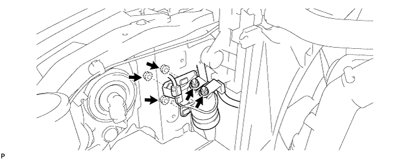

RELAY > INSTALLATION |
| 1. INSTALL WINCH MAIN RELAY |
Install the relay with the 3 nuts.
Connect the 2 wires with the 2 nuts.
Connect the connector.

| 2. INSTALL UPPER RADIATOR SUPPORT SEAL |
for Gasoline Engine:
Install the upper radiator support seal (Click here).
for Diesel Engine:
Install the upper radiator support seal (Click here).
| 3. CONNECT CABLE TO NEGATIVE BATTERY TERMINAL |